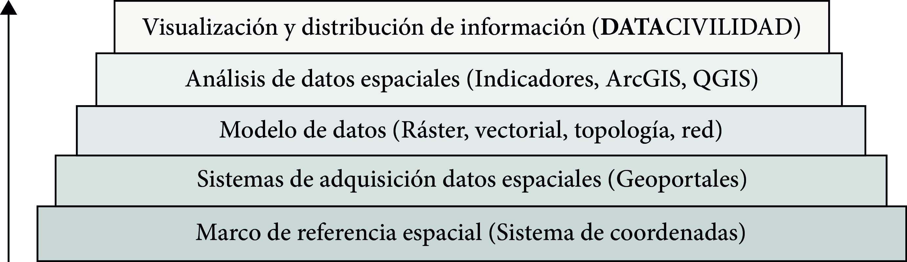

Unidad 4.1 Estructura ambiental
El ejercicio del análisis geográfico ha evolucionado conforme las herramientas y técnicas se han digitalizado y vuelto más eficientes, exactas y precisas. Actualmente, cualquier persona que cuente con internet y un computador tiene herramientas a la vanguardia del análisis territorial. La digitalización del análisis geográfico y los fundamentos sobre los cuales se desarrollan, se deben aprovechar de cara a construir capacidades de análisis espacial autónomo en el ejercicio de generación de conocimiento, la participación ciudadana incidente y para el control social de instituciones públicas.
Para la construcción de civilidad en Bogotá, es necesario el uso de herramientas y capacidades de análisis espacial utilizando Sistemas de Información Geográfica-SIG para estudiar de manera detallada las diferentes capas físicas, sociales y económicas del territorio y su evolución a lo largo del tiempo.
Los SIG son un conjunto de herramientas que permiten capturar, almacenar, procesar y visualizar información que tenga un componente espacial. Sus componentes principales incluyen los sensores remotos y obtención de datos georreferenciados, sistemas de coordenadas, tipos de datos geográficos, metodologías de análisis. Existen múltiples herramientas para el procesamiento, visualización y análisis de datos —ArcGIS, QGIS, GEE, Google Maps, Python— y visores web para la consulta de información e indicadores desarrollados por personas o entidades.
Imagen 5. Jerarquización del uso de SIG

Fuente: Elaboración Sociedad de Mejoras y Ornato de Bogotá.Con esto, el programa Construyendo Civilidad-Cátedra Bogotá busca que los cursantes tengan accesibilidad y capacidad de análisis de los datos y herramientas para generar una conciencia completa del entorno que los rodea y de los cambios que ha experimentado la ciudad a través de su historia, para entender cómo se configuran las condiciones que experimentan como ciudadanos día a día, y que así adquieran un empoderamiento, y autonomía en cuanto a la planeación, toma de decisiones, y el seguimiento y monitoreo de políticas y los planes nacionales, locales y regionales dentro de su territorio.
Para el análisis geográfico del territorio, la sociedad y el bienestar en Bogotá, la Sociedad de Mejoras y Ornato de Bogotá desarrolló la página web DATACIVILIDAD que cuenta con información, indicadores y mapas de la zona de estudio. Sin embargo, a continuación, se listan algunas fuentes de otras instituciones para la obtención, consulta y análisis de datos geográficos.
- DATACIVILIDAD de la Sociedad de Mejoras y Ornato de Bogotá
- Acumulado de lluvias en Bogotá
- Amazonas–Chingaza-GIS de la Escuela Colombiana de Ingeniería Julio Garavito
- Análisis Censo Nacional de Población y Vivienda CNPV 2018-DANE
- Batería indicadores Bogotá Región - Secretaría de Hábitat
- Bogotá Metropolitana: Ciudad, territorio y ambiente
- Cartografías de Bogotá de la Universidad Nacional de Colombia.
- Portal de datos abiertos del sector ambiente - Sistema de Información ambiental de Colombia SIAC
- Centro de Gobierno Local Bogotá
- Colombia en Mapas del Instituto Geográfico Agustín Codazzi
- Portal de datos abiertos ANLA
- Geo portal Ambiental Institucional IDEAM
- Geo portal DANE
- Geo portal Datos Abiertos JBB
- Geo portal Empresa de Acueducto y Alcantarillado de Bogotá
- Geo portal Instituto de Desarrollo Urbano Bogotá
- Geovisor Ambiental de la Secretaría de Ambiente de Bogotá
- Geovisor Secretaría de Movilidad de Bogotá
- Geovisor Instituto Humboldt de Colombia:
- Geovisor Patrimonial Ministerio de las Culturas S. I. P. A.:
- Geo portal Servicio Geológico Colombiano-SGC:
- Geovisor regional de ProBogotá
- Global Atlas of Environmental Justice
- Infraestructura de datos espaciales regional–Cundinamarca-IDER
- Mapas Bogotá de la Alcaldía Mayor de Bogotá:
- Observatorio de Dinámicas Urbano Regionales-ODUR de la Gobernación de Cundinamarca
- Red de monitoreo de Calidad del Aire de Bogotá de la Secretaría de Ambiente de Bogotá
- Recursos SIG del profesor Rodolfo Franco
- Datos sobre biodiversidad de Colombia
- Sistema de Información Ambiental del Sector Ambiente
- Sistema de Información de Norma Urbana y Plan de Ordenamiento Territorial de Bogotá-SINUPOT y Visor de población de Bogotá D. C. de la Secretaría Distrital de Planeación
- Sistema de Información para la Planificación Rural Agropecuaria de la UPRA
- Tableros de control – Visualización y descarga de datos ANLA
Sección 4.1.3 Las relaciones y determinantes ambientales del territorio Sección 4.2.1 El paisaje de Bogotá Sección 4.2.2 Conflictos socioecológicos y justicia ambiental Sección 4.2.3 La sostenibilidad territorial en Bogotá Sección 4.3.2 La Región hídrica de Bogotá y su Estructura Ecológica Principal Sección 4.3.3 Evolución de la ocupación del territorio